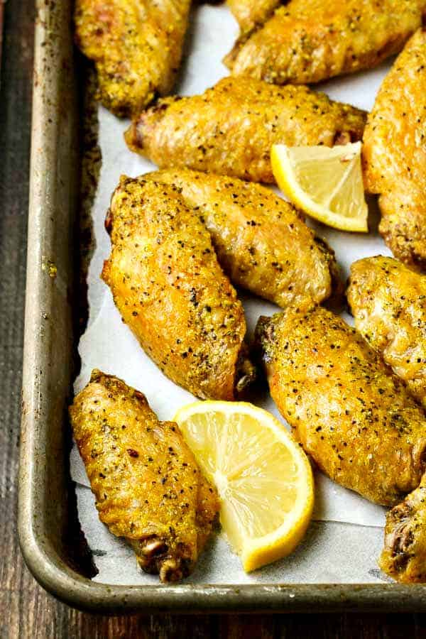

Easy Lemon-Pepper Chicken Wings

The picture above displays are a trey of finished lemon pepper wings
This recipe should leave you with a full trey of fresh, well seasoned, juicy, and crispy easy to make lemon pepper wings
Ingredients
- 2 cups oil, or as needed
- 2 tablespoons extra-virgin olive oil
- 1 tablespoon lemon-pepper seasoning
- 12 chicken wings
Directions
- Heat oil in a deep-fryer or large saucepan to 375 degrees F (190 degrees C)
- Stir olive oil and lemon-pepper together in a b
- Fry wings in hot oil until no longer pink at the bone and the juices run clear, about 8 minutes; an instant-read thermometer inserted near the bone should read 165 degrees F (74 degrees C).
- Toss hot wings with lemon-pepper mixture to coat.
Editor's Note
- We have determined the nutritional value of oil for frying based on a retention value of 10% after cooking. Amount will vary depending on cooking time and temperature, ingredient density, and specific type of oil used.